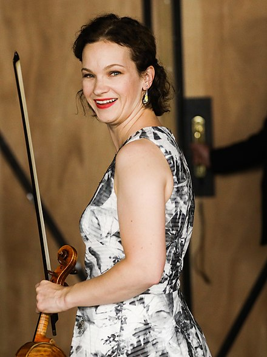

Hilary Hahn wuchs in Baltimore auf. Ihre Vorfahren stammen aus Bad Dürkheim in der Pfalz. Sie spricht als einzige ihrer Familie Deutsch, außerdem lernte sie Französisch und Japanisch
Bereits im Alter von drei Jahren erhielt sie ersten Geigenunterricht nach der Suzuki-Methode und wurde zwei Jahre später von Klara Berkovich unterrichtet, einer Vertreterin der russischen Violinschule aus Odessa. Mit sechs Jahren trat sie erstmals öffentlich auf mit zehn Jahren gab sie ihr erstes Solokonzert. Ab 1989 wurde sie am Curtis Institute of Music in Philadelphia von Jascha Brodsky unterrichtet, der als Schüler von Eugène Ysaÿes in der belgischen Tradition stand. 1999 absolvierte sie ihr Bachelor-Degree am Curtis Institute of Music.
1991 gab Hahn im Alter von 12 Jahren ihr Debüt mit dem Baltimore Symphony Orchestra. In Europa debütierte sie 1993 in Ungarn mit dem Budapester Festival Orchester. Bei ihrem ersten Auftritt in Deutschland im Jahr 1995 mit dem Symphonieorchester des Bayerischen Rundfunks unter der Leitung von Lorin Maazel interpretierte sie Beethovens Violinkonzert. Ein Jahr später folgte ihr Debüt in der Carnegie Hall.
Hahn konzertierte seither international mit bedeutenden Dirigenten und Orchestern, darunter:
und Rundfunksinfonieorchester wie:
Sie absolvierte Tourneen durch die USA, Südamerika, Europa und nach Japan (mit den Berliner Philharmonikern), und gastierte bei internationalen Festivals, zum Beispiel Festspiele Mecklenburg-Vorpommern, Schleswig-Holstein Musik Festival, Rheingau Musikfestival, Gstaad Menuhin Festival, Verbier Festival, Ravinia Festival, Marlboro Festival, Montpellier Festival, Tanglewood und Aspen Festival.[5][7]
Sie lebte mehrere Jahre in New York City und zog 2016 gemeinsam mit ihrem Mann, mit dem sie zwei Töchter hat, nach Cambridge (Massachusetts).[9]
Hilary Hahns Repertoire umfasst Werke des musikalischen Barock bis hin zur zeitgenössischen Musik, dazu zählen auch seltener gespielte Werke wie das Violinkonzert von Igor Strawinski. Als CD-Debüt spielte sie 1997 eine Sonate und zwei Partiten für Violine solo von Johann Sebastian Bach ein. Im Jahr 2000 erschien die Aufnahme des Hilary Hahn gewidmeten Violinkonzerts[5] von Edgar Meyer. Ebenfalls spielte sie zum Hollywood-Film The Village die Filmmusik von James Newton Howard. Im Rahmen von genreübergreifender Zusammenarbeit trat sie in Crossover-Duos mit den Singer-Songwritern Josh Ritter und Tom Brosseau auf, auch im Rahmen von Tourneen.[10] Außerdem ist sie in den Songs To Russia My Homeland auf dem Album Worlds Apart und Witch’s Web auf dem Album So Divided der amerikanischen Rockband Trail of Dead zu hören.[11]
Hilary Hahn spielt unter anderem auf zwei Violinen des französischen Geigenbauers J.B. Vuillaume, ein Guarneri-del-Gesù-Modell aus dem Jahr 1864, das sie seit ihrem 14. Lebensjahr spielt, und ein Stradivari-Modell aus dem Jahr 1865.[12] Sie benutzt französische und englische Bogen aus dem 19. Jahrhundert, beispielsweise ein vorrangig auf dem Stradivari-Modell verwendetes Exemplar von James Tubbs.[12]